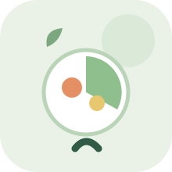
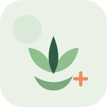
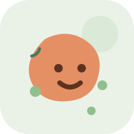
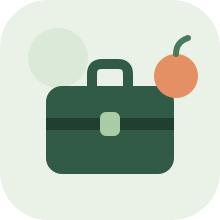

خدماتنا وبرامجنا
Unsere Leistungen & Programme
 مغطى من التأمين الصحيKassenleistung
مغطى من التأمين الصحيKassenleistungاستشارة غذائية علاجية
Ernährungstherapeutische Beratung
لمرضى لديهم حالة صحية تستلزم تدخلاً غذائياً أو تتأثر بالتغذية بأي شكل. تواصل معنا عبر واتساب وسنساعدك بخطوات تقديم الطلب للتأمين الصحي وتزويدك بكل المستندات المطلوبة.
Für Patienten mit einer gesundheitlichen Erkrankung, die eine Ernährungsintervention erfordert. Kontaktieren Sie uns über WhatsApp — wir helfen Ihnen beim Antrag bei Ihrer Krankenkasse und stellen alle nötigen Unterlagen bereit.
اسأل عن الشروطDetails erfragen
التدريب الغذائي الوقائي — الوقاية من مقاومة الأنسولين
Präventives Ernährungstraining — Prävention von Insulinresistenz
كورس أونلاين لمدة 8 أسابيع، مسجل رسمياً لدى التأمين الصحي الألماني، لتعليم أساسيات التغذية السليمة للوقاية من مقاومة الأنسولين — مناسب للمرضى والأشخاص الأصحاء.
8-wöchiges Online-Seminar, offiziell bei den deutschen Krankenkassen registriert, zur Vermittlung der Grundlagen gesunder Ernährung zur Prävention von Insulinresistenz.
المحتوى
Inhalt
مقدمة ووزن مثالي، مقاومة الأنسولين والسمنة، المغذيات الكبيرة والكربوهيدرات، المغذيات الصغرى، البروتينات والدهون، التمثيل الغذائي، تغيير النظام الغذائي، الرياضة.
Einführung & Idealgewicht, Insulinresistenz & Adipositas, Makronährstoffe, Mikronährstoffe, Proteine & Fette, Stoffwechsel, Ernährungsumstellung, Bewegung.
استرجاع الرسوم
Kostenerstattung
أغلب التأمينات الصحية بترجع حتى 100% من رسوم الاشتراك بشرط حضور أكثر من 80% من الكورس.
Die meisten Krankenkassen erstatten bis zu 100% der Kursgebühr bei mindestens 80% Anwesenheit.
رسوم الكورس: 150 يورو
Kursgebühr: 150 €
الأسئلة الشائعة
Häufige Fragen
كيف أقدم طلب للتأمين الصحي؟
Wie stelle ich einen Antrag bei der Krankenkasse?
تواصل معنا عبر واتساب وسنرشدك خطوة بخطوة ونزودك بكل المستندات المطلوبة.
Kontaktieren Sie uns über WhatsApp — wir helfen Ihnen Schritt für Schritt und stellen alle nötigen Unterlagen bereit.
هل الكورس الوقائي أونلاين أم حضوري؟
Ist der Präventionskurs online oder in Präsenz?
الكورس أونلاين بالكامل لمدة 8 أسابيع، يمكنك متابعته من أي مكان.
Der Kurs ist komplett online über 8 Wochen — Sie können von überall teilnehmen.
كم يستغرق برنامج التخسيس؟
Wie lange dauert das Abnehmprogramm?
يعتمد على هدفك وحالتك، عادة 5 جلسات أو أكثر حسب تأمينك الصحي.
Das hängt von Ihrem Ziel und Ihrer Situation ab, in der Regel 5 Sitzungen oder mehr.
هل البرامج مناسبة للأشخاص الأصحاء؟
Sind die Programme auch für gesunde Personen geeignet?
نعم، الكورس الوقائي والبرامج المخصصة مناسبة للأصحاء الذين يرغبون بتحسين تغذيتهم.
Ja, der Präventionskurs und die Programme sind auch für gesunde Personen geeignet, die ihre Ernährung verbessern möchten.
برامج ووِرش عمل
Programme & Workshops

برنامج التخسيس
Abnehmprogramm
خطة غذائية وتدريبية متوازنة (نظام TUT) لخسارة وزن صحية.
Ausgewogenes Ernährungs- und Trainingsprogramm (TUT-Methode) für gesunden Gewichtsverlust.
5 جلسات أو أكثر حسب تأمينك الصحي
5 Sitzungen oder mehr, abhängig von Ihrer Krankenversicherung

التغذية وسن الأمل
Ernährung in den Wechseljahren
برنامج غذائي لدعم النساء في سن الأمل، مع ملحق معلوماتي شامل.
Ernährungsprogramm zur Unterstützung von Frauen in den Wechseljahren, inkl. Informationsbroschüre.
40 يورو
40 €
برنامج رمضان
Ramadan-Programm
نظام غذائي متوازن لأوقات الصيام، لتحقيق أهدافك الصحية دون شعور بالحرمان.
Ausgewogener Ernährungsplan für die Fastenzeit — Ihre Gesundheitsziele ohne Verzichtsgefühl.
40 يورو
40 €
ورشة البشرة والشعر والأظافر
Workshop: Haut, Haare & Nägel
أفضل الأطعمة لتعزيز صحة البشرة والشعر والأظافر من الداخل.
Die besten Lebensmittel für Haut, Haare und Nägel — Schönheit von innen.
40 يورو
40 €

ورشة البكتيريا النافعة والجهاز الهضمي
Workshop: Darmgesundheit
تنشيط البكتيريا النافعة بعد الصيام والتخلص من مشاكل الإمساك، مع وصفات عملية.
Aktivierung der Darmflora nach dem Fasten, praktische Rezepte gegen Verstopfung.
40 يورو
40 €

برامج للشركات
Firmenprogramme
برامج تغذية وتوعية صحية مخصصة لموظفي الشركات.
Maßgeschneiderte Ernährungs- und Gesundheitsprogramme für Unternehmen.